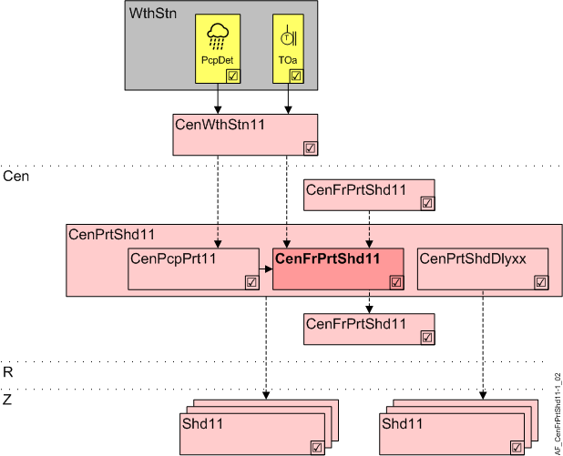

Central frost protection for shading products (CenFrPrtShd11)
Overview
The application function "Central frost protection shading 11" (CenFrPrtShd11) handles frost protection for shading products.

WthStn | Weather station |
PcpDet | Precipitation detector |
TOa | Outside air temperature |
Cen | Central functions |
CenPrtShd11 | Central protection shading 11 |
CenPcpPrt11 | Central precipitation protection 11 |
CenFrPrtShd11 | Central frost protection shading 11 |
CenPrtShdDlyxx | Central protection shading delay 11...13 |
R | Room |
Z | Shading zone in one room segment |
Shd11 | Shading 11, for shading and daylight use with venetian blinds or awnings, group members |
Function
The AF is required when icing damages shading products or actuators (blinds, awnings).
In addition, AF CenPcpPrt11 must be enabled to recognize precipitation.
Frost protection is active, if the temperature drops below an adjustable limit and precipitation is reported at the same time (from CenPcpPrt11). Time delays are used to adapt the function to shading products.
Frost protection is reset, if
- there is no precipitation during a set period
- or the outside temperature is above the limit value during a set period
- or manually from an operator unit (using RstFrPrt)
The reaction to frost protection can be configured. Default value: Open.
The reaction to a sensor fault (precipitation sensor and frost protection monitor) can be configured. Default value: No reaction.
Hierarchical grouping
This AF supports hierarchical grouping. For detailed information, see Hierarchical grouping.
Interface to local and superordinate functions
Local inputs and superordinate AFs access the same BACnet objects. Evaluation by priority. The local protection input has higher priority than the shading command of the superordinate central functions.
Configuration
 objects
objects
Description | Object | Type | Default value |
|---|---|---|---|
Reset lock frost protection ▶ For manual reset over BACnet | RstFrPrt | BCnfVal | 0 |
 Parameter
Parameter
Description | Parameter | Default value |
|---|---|---|
Switch-on point ▶ Limit value to trigger frost protection (only when precipitation is present). | SwiOnPt | 3 [°C], 37.4 [°F] |
Switch-off point 1 ▶ Reset temperature 1 (when dry). | SwiOffPt1 | 7 [°C], 44.6 [°F] |
Switch-off point 2 ▶ Reset temperature 2 (when precipitation is present). | SwiOffPt2 | 10 [°C], 50.0 [°F] |
Switch-on delay protection function | DlyOnPrt | 100 [s] |
Switch-off delay protection function ▶ Switch-off delay for frost protection when dry and reset temperature 1 is exceeded. | DlyOffPrt | 10 [h] |
Switch-off delay reset ▶ Switch-off delay for frost protection when reset temperature 2 exceeded. | DlyOffRst | 10 [h] |
Command on limit exceed 1:None | CmdLmExc | 2:Open |
Command on sensor fault (Temperature sensor) Note: Sensor fault precipitation must be configured at CenPcpPrt11. Enumeration see CmdLmExc | CmdSenFlt | 1:None |
Temperature unit ▶ Defined by the selection of the engineering unit – do not change. | TUnit | [°C] |

RstFrPrt is not used for configuration in the web interface.
Interface
Interface | Description | Type | Ref. | Owner |
|---|---|---|---|---|
TOa | Outside air temperature | AI | ◉ | Central function / Device |
RstFrPrt | Reset lock frost protection | BCnfCal | ● | - |
Engineering and commissioning
The manufacturer determines if blinds require frost protection based on product, location, and mounting type.
The delay time must be set sufficiently high to allow an iced blind to thaw.
Frost protection blocks automatic and manual blinds operation. The automatic reset occurs only after exceeding the configured switch-off point. This could take weeks (depending on the region). For this reason, an enabled frost protection function can be reset by external sources (BACnet commanding, e.g. technical service).
The default values apply to a moderate climate. They guarantee a high degree of protection and require the ability to manually reset.
At locations at high risk of frost, it makes sense to configure a reaction to a sensor fault (Frost protection monitor : CmdSenFlt. Precipitation detector: Must be configured in CenPcpPrt11).